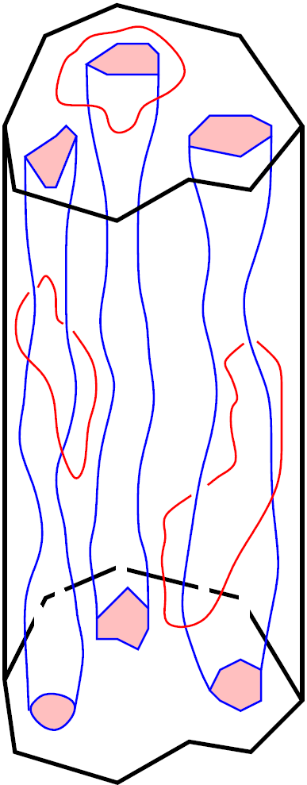

|
Topology studies how a shape or object is
connected. In the past couple decades, there has
been an increased interest in the development and
use of topological methods for solving various
problems in science and engineering. This new line
of study is called Computational Topology,
Topological Data Analysis (TDA),
or Applied Algebraic
Topology. Computational topology combines
topological results with efficient efficient
algorithms to analyze data and solve problems
in many fields—biomedicine,
phenomics, machine learning, computer graphics and
image analysis, sensor networks, robotics,
geography, and several others. For motivation, see
my TEDx
talk on how TDA helps to find hidden
structures in data.
This course will present an introductory,
self-contained overview of computational
topology. There are no prerequisites, but
mathematical sophistication at the senior
undergraduate level and some familiarity with the
use of computer packages such as Matlab or Python
are expected. We will cover basic concepts from a
number of areas of mathematics, such as abstract
algebra, algebraic topology, and optimization. We
will also look at algorithms and data structures,
and efficient software for analyzing the topology of
point sets and shapes.
While there is a recommended
book, we will rely a lot on handouts and class
notes. Material from several recent (and not-so
recent) papers will also be covered. Since the main
goal of this course is to expose the audience to
this nascent interdisciplinary research area,
evaluation will be done through homework (around 6
assignments) and a course project. No exams will be
given.
|

|